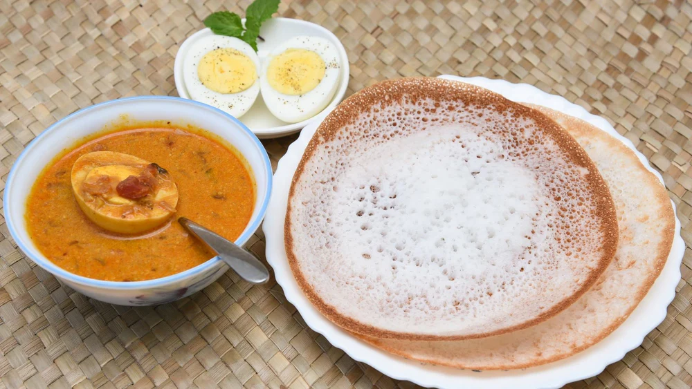

Hoppers

Description
Easy Hoppers (Appa, Appam) made with Rice Flour! Are you looking for an easy way to make hoppers (appa, appam)? Learn to make hoppers with store-bought rice flour with this easy recipe. Follow our step-by-step guide and top tips.
Yes, I know. It’s a bit tricky at first to make perfect bowl-shaped hoppers. But you can master the art within a few tries.
Ingredients
- 2 cups rice (preferably parboiled or Sona Masuri rice)
- 1/2 cup peeled black lentils
- 1/4 teaspoon active dry yeast for fermentation
- 1 teaspoon sugar
- 1 teaspoon salt
- 1/2 teaspoon baking powder
- Water for soaking and for the dough consistency
- Coconut oil or vegetable oil for frying the appams
Steps
- Rinse the rice and urd beans thoroughly in a bowl and cover with plenty of water. Leave to soak overnight or for at least 6 hours.
- Drain the soaked rice and urd beans and process in a blender or food processor until smooth. Add a little water if necessary to achieve a thick consistency.
- Place the dough in a large bowl and add the dry yeast, sugar and salt. Stir well to combine. Cover the dough and let it ferment in a warm place for at least 6-8 hours or overnight. The dough should rise and form bubbles.
- Before frying the appams, add the baking powder to the batter and stir thoroughly.
- Preheat an appam pan or a flat frying pan with a lid on medium heat. Grease it with a little coconut oil or vegetable oil.
- Add a ladle of batter to the center of the pan and rotate it evenly in a circular manner to form a thin edge and a thicker center. Place the pan lid on top and fry the appam for about 2-3 minutes until golden brown and crispy around the edges while the center remains slightly fluffy.
- Carefully remove the finished appams from the pan and keep them warm on a plate. Repeat the process with the remaining batter.